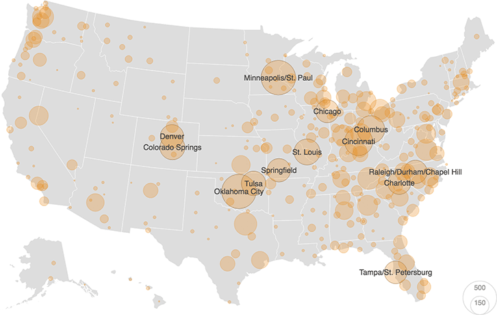

Firearm Listings By Major City, Region On ‘Craigslist For Guns’
Of the 15,500 unique listings on Armslist from June 12-15, 2016, 90 percent were associated with specific cities or regions. Minneapolis/St. Paul, Minn., (526 listings) and Oklahoma City, Okla., (521) had the most listings. At the state level, Ohio (1,514) and North Carolina (1,178) had the most total listings.
